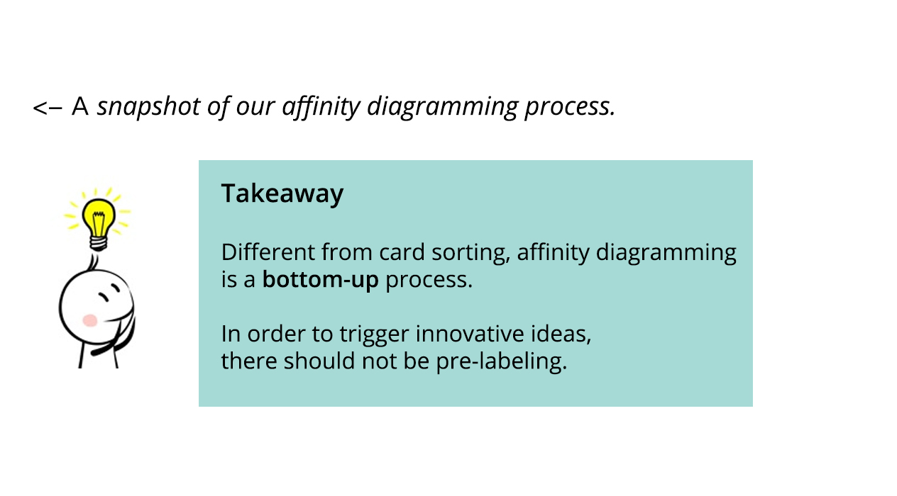
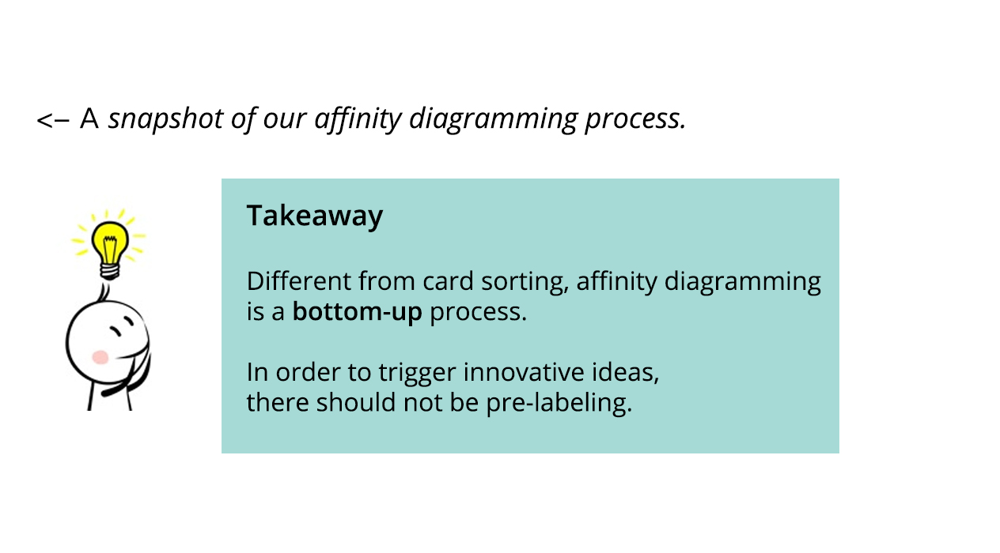

CAPSTONE PROJECT:
Supporting 4-12 Education in Arts and Humanities with DRR Resources

Project Introduction
This is my capstone project with the Diplomatic Reception Rooms(DRR) of U.S. Department of State.
DRR wants to find a way to make the best use of their resources to support teaching and learning in the arts and humanities in K-12, primarily 4-12, education across the United States.
We work as UX researchers and UX designers in this project to help DRR discover what teachers and students need and to develop exciting product concepts to provide the engaging, easy-to-navigate, highly interactive, and user-friendly experiences to target users. In this project, we follow the Contextual Design methods by Karen Holtzblatt, who is also an advisor for our capstone project.
Project information
- Type :Capstone project of HCIM@UMD with State Department DRR
- Team Member :Aditi, Brahm, Jaina, Paul, Pranathi, Sahar
- Supervisor :Bill Kules, Karen Holtzblatt
- My Role :Contextual Inquiry / Affinity Diagramming / Visioning / Prototyping
- Date :Oct 2018 - May 2019 (in process)
User Research
We recruited and interviewed 22 participants in our user research process. They are K4-K12 teachers who teach different subjects. Below is the demographics of our participants.
For each participant, we did a 2-hour user research session that includes a semi-structured interview about their preferences of online tools and a contextual inquiry to observe how teachers usually interact with online tools. For online tools, we mainly focus on three most popular types of the online resources - interactive timeline, virtual tours, and online exhibits.
Then, after each user research session, we would have an interpretation session to transform the interview notes into formal affinity notes. Moreover, we will also create three experience models (identity model, collaboration model, artifact model) for the participant to help us get useful information from the user research session such as teachers' personalities, the relationship between different stakeholders, and teachers' interaction with different UI elements of online tools.
Below are some examples of the experience models we created in the interpretation session.

Affinity Diagramming
 
After all the interview and interpretation sessions, we printed all the affinity notes on the yellow stick notes and started the affinity diagramming process.
After the first round of affinity diagramming, we followed the contextual design methods to create blue labels for each group. Then, we regrouped the blue labels and created pink labels for groups of blue labels. Finally, we create the top level green labels for the pink label groups. Below are the photos and some examples of our notes.
We summarized seven top-level green labels as below which represents the overarching themes of our data. Those findings could implicate the teachers' styles of teaching and their preferences/expectations for online resources. These findings could guide us in the following design and visioning process.
Models
We also consolidated all the experience models (identity model, collaboration model, artifact model) that we made for each participant into three final models. This could also help us to gain more insights about our target users.
1. Identity Model
It shows different observations of sources of pride, self-esteem, and value of individuals, and also represents different aspects of self that matter for the project focus. (Click here to view more details)

2. Collaboration Model
It describes how users collaborate to complete the observed activities and it reminds designers to keep user connections in mind while designing. (Click here to view more details)
3. Artifact Model
We create three artifact models for the three types of online resources we focused on - interactive timeline, virtual tour, and online exhibit. It captures which elements of the website people interacted with and how was their experience using those elements. (Click here to view more details)

Wall-walk + Visioning
Then, we did a wall-walk to generate design ideas based on the affinity notes. After we got all the design ideas from team members, we discussed those design ideas and then selected the "hot ideas" from all the ideas. After grouping all the ideas, we picked three ideas for visioning :
1. A guided virtual tour that incorporates timeline and exhibits based on context
2. Activity finder and generator for teachers
3. Immersive games for students to enable learning
As is shown in the images below, in the visioning process, we discussed the features and the journeys of the product concept.

Initial Product Concepts
After the visioning, three of our team members developed the prototype for initial product concept demonstration.
I was in charge of the product concept design for the guided virtual tour concept. The guided virtual tour has a virtual tour who can walk you through the tour of a customized theme. Also, the virtual has the interactive timeline and online exhibit elements tied to a specific artifact which could provide users with contextual information.
We also have two other product concept prototypes for the immersive game and activity generator platform ideas as shown in the image.

What's next
In the next spring semester, DRR will choose one product concept to develop more details, and they will also provide us with more detailed themes of the product. We will build storyboards and high-fidelity prototypes as deliverables. We will also involve kids from the Kidsteam of UMD HCIL Lab in our design iteration process to give us valuable feedback through user testing.